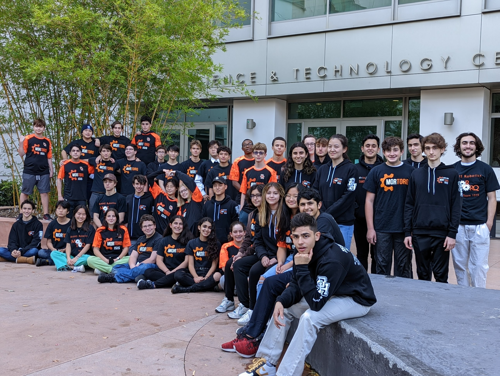

Mission Statement
We strive to inspire future generations to pursue careers in STEM and Entrepreneurship by encouraging inclusion, leadership, ingenuity and teamwork.
FRC - 2021 Game Changers
For the 2021 season, our team competed in the three at home challenges offered by FIRST: Infinite Recharge at Home, Game Design Challenge, and Innovation Challenge.
FRC - 2021 Infinite Recharge at Home
For Infinite Recharge at Home, we competed with our robot from the 2020 season (more on this robot in the 2020 season description below). Through images and videos, our team created a presentation to showcase the robot's mechanisms and detail our design process.
FRC - 2021 Game Design Challenge
In the Game Design Challenge, teams were tasked with creating their own FIRST Robotics Competition game, complete with all the logistical requirements (timing of matches, robot size, field dimensions, etc.) of a real FRC competition. Our team created FIRST Firefighter Frenzy, in which teams had to carry valuables into the rescue zone (using the chain element) and shoot water cells into burning homes to put out the flames. To challenge competitors with a climbing portion, teams could scale the side of a firetruck to score extra points.
FRC - 2021 Innovation Challenge
As part of the Innovation Challenge, we needed to develop something to help people increase their fitness through movement. Our team designed MorStep, a midsole which uses the stepping motion to generate power through the reverse electrowetting (REWOD) process. The electricity produced would then be channeled to facilitate wireless charging of devices including phones and smartwatches. By supplying a reliable power source, this technology would allow users to perform their daily activities without needing to stop and recharge devices or carry an additional power bank.
FRC 2020 - Infinite Recharge
 Our 2020 robot had a revolver type magazine, a feature that allowed us to carry five balls at a time. The robot could intake balls, place them into the magazine, and then used a solenoid to direct the ball into the two wheel shooter... View Full
Our 2020 robot had a revolver type magazine, a feature that allowed us to carry five balls at a time. The robot could intake balls, place them into the magazine, and then used a solenoid to direct the ball into the two wheel shooter... View Full
Team History
Our team competes in the FIRST robotics competition as Team 1515. Team 1515 was founded in the fall of 2004 under the leadership of Former Principal of Beverly Hills High School Dr. Dan Stepenosky, member of the School Board Dr. Myra Demeter, Beverly Hills High School Chemistry Teacher Charles Lee, and parent Eileen Kahn... View Full
